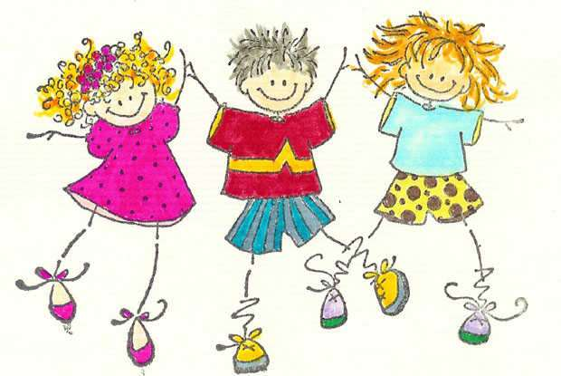

Friendships
'Ointment and perfume rejoice this heart,- And so does the sweetness of a friend's loving face.' -(The Bible) Man does not live by bread alone. His relationship with others in the family and society give him an identity and provide a psychological satisfaction. Among all other ties, friendship brings immens joy in our life. If we are lucky to have a noble friend, he will save us from all our depressions. The magic of mutual love will bring boundless joy as love knows no weariness. There are hundreds of stories in the world classics which tell us many immortal comradeships. David-Jonathan, etc. are some rare examples. How does this miracle happen between two strangers and bind them in the knot of love? There is something in each that strikes a spontaneous appreciation. Friends always find something fresh to admire and appreciate in each other. We should be grateful for friendships. It involves sacrifice of time and thoughts. It is a lovely thing to be perfectly loyal to a friend. We should try to keep the friends we have. Strive to help them. Never find fault or speak ill of them. Take interest in their life and shower love unconditionally on them. Don't hurt your dear ones even in your disturbed moments. Remember the words of shakespeare. 'But if the while I think on the dear friend,-All Losses are restored and sorrow end.'